Britania Raya

Lee-Enfield
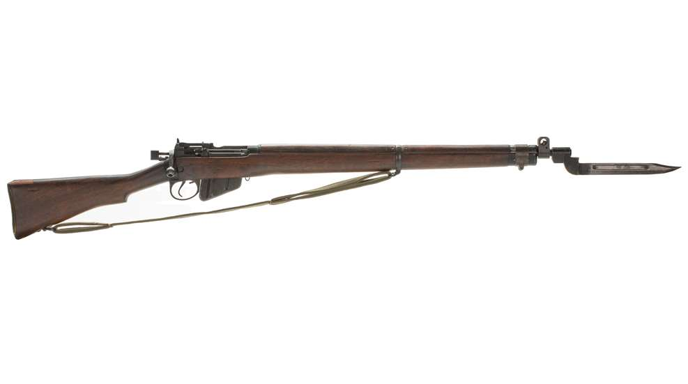Jenis : Senapan aksi-baut
Peluru : .303 British
Perancang : James Paris Lee, Royal Small Arms Factory, Enfield
Senapan Lee-Enfield atau dikenal dengan nama dagangnya, Lee-Enfield, atau SMLE (Short Magazine Lee-Enfield, bahasa Indonesia: Lee-Enfield Magazen Pendek), adalah senapan aksi-baut, pengisian magazen, dan repetir utama yang digunakan oleh kesatuan militer Kekaisaran Inggris dan negara Persemakmuran Inggris selama paruh pertama dari abad ke-20. Senapan ini adalah senapan standar Angkatan Darat Inggris sejak adopsi pertamanya pada tahun 1895 sampai 1957.
Sten
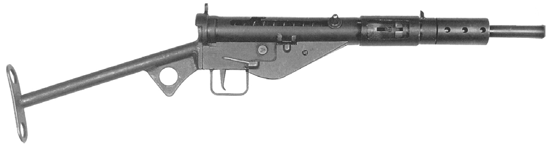Jenis : Pistol mitraliur
Peluru : 9mm Parabellum
Perancang : Major Reginald V. Shepherd, Harold J. Turpin
Sten adalah keluarga pistol mitraliur Britania Raya yang dilengkapi dengan yang menggunakan peluru 9 × 19 mm Parabellum yang digunakan secara ekstensif oleh Inggris dan Persemakmuran di seluruh Perang Dunia II dan Perang Korea. Mereka memiliki desain yang sederhana dan biaya produksi yang sangat rendah, menjadikannya senjata pemberontakan yang efektif untuk kelompok perlawanan, dan mereka terus digunakan hingga hari ini oleh pasukan militer tidak beraturan. Sten berfungsi sebagai dasar untuk pistol mitraliur Sterling, yang menggantikan Sten dalam dinas hingga tahun 1990-an, ketika itu, dan semua pistol mitraliur lainnya, digantikan oleh SA80.
Bren
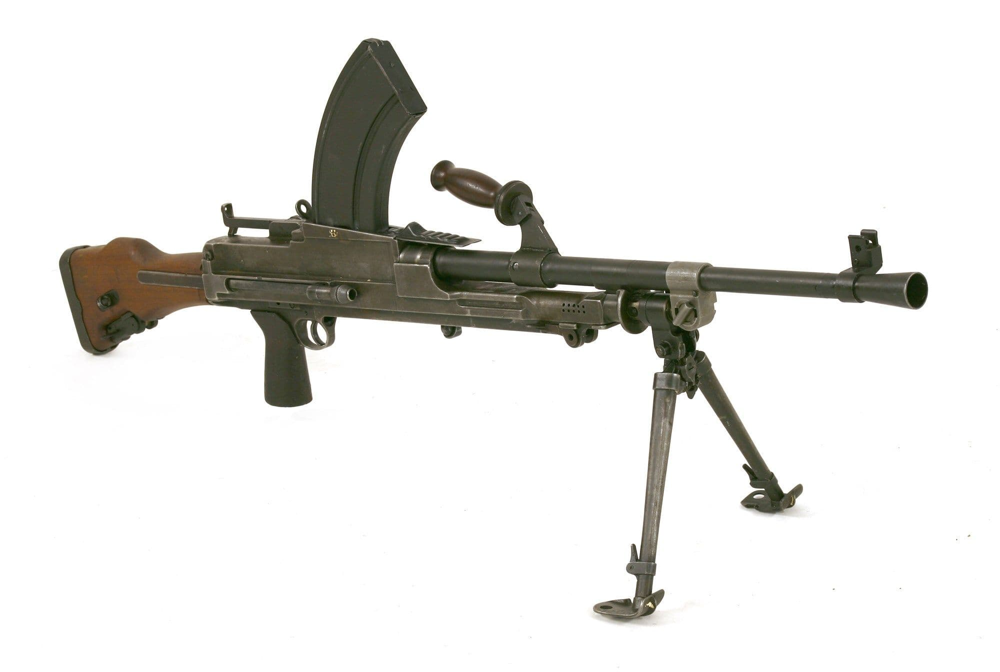Jenis : Senapan mesin ringan
Peluru : .303 British
Perancang : Royal Small Arms Factory, Enfield
Senapan Bren atau biasa disebut Bren, adalah seri Senapan Mesin Ringan (SMR) yang diadopsi oleh Britania Raya pada tahun 1930-an dan digunakan dalam berbagai misi pasukan sampai tahun 1991. Senapan ini terkenal karena perannya sebagai kekuatan Senapan Mesin Ringan utama yang digunakan infanteri Britania Raya dan Persemakmuran Inggris dalam Perang Dunia II, dan juga digunakan dalam Perang Korea dan digunakan dalam misi tempur yang terjadi dalam seluruh paruh kedua abad ke-20, termasuk pada Perang Falkland tahun 1982 dan Perang Teluk 1991. Meskipun dilengkapi dengan standar bipod, senapan ini juga bisa dipasang pada standar tripod atau standar atas kendaraan.
Republik Perancis

MAS-36
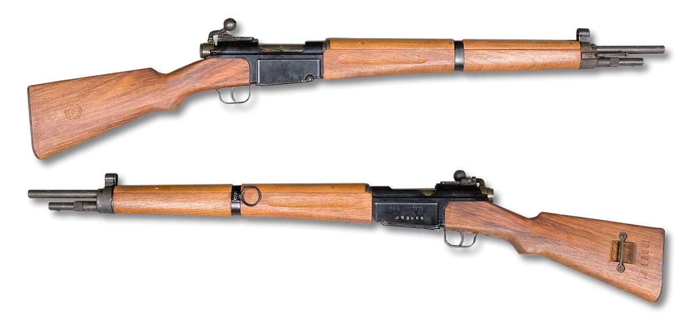Jenis : Senapan aksi-baut
Peluru : 7,5mm French
Perancang : Manufacture d'armes de Saint-Étienne
MAS Modèle 36 (juga dikenal sebagai Fusil à répétition 7 mm 5 M.36 [1] ) adalah senapan bolt-action militer . Pertama kali diadopsi pada tahun 1936 oleh Perancis dan dimaksudkan untuk menggantikan seri senapan dinas Berthier dan Lebel , senapan ini sudah digunakan sejak lama setelah periode Perang Dunia II . Senjata ini diproduksi mulai akhir tahun 1937 dan seterusnya oleh Manufacture d'Armes de Saint-Étienne (MAS), salah satu dari beberapa pabrik senjata milik pemerintah di Perancis. Hanya 250.000 senapan MAS-36 yang tersedia untuk melengkapi infanteri Prancis selama Pertempuran Prancis pada tahun 1940. Produksi massal akhirnya menyusul setelah Perang Dunia II dan senapan MAS-36 mulai digunakan secara luas selama Perang Indochina Pertama , Perang Aljazair , dan Krisis Suez . Secara keseluruhan, sekitar 1,1 juta senapan MAS-36 telah diproduksi ketika produksinya dihentikan pada tahun 1952.
MAS-38
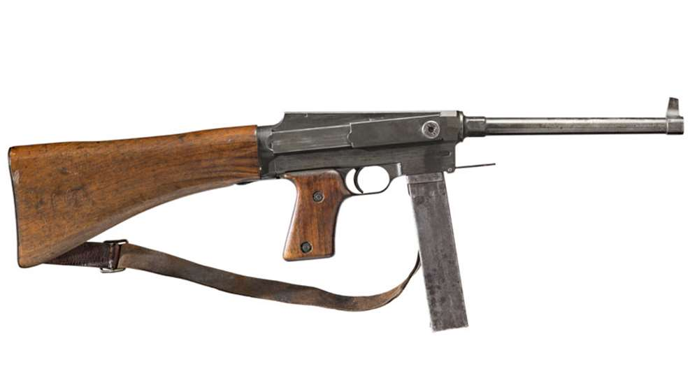Jenis : Pistol mitraliur
Peluru : 7,65mm Longue
Perancang : Manufacture d’armes de Saint-Etienne
Manufacture d’armes de saint-Etienne-38 (MAS-38) adalah pistol mitraliur standar dari Prancis yang digunakan oleh tentara Prancis dan Jerman pada Perang Dunia II. Pada awalnya dibuat sebagai standar Gendarmes Mobile (Garda Republik), MAS-38 adalah mitraliur berkualitas dibanding mitraliur lainnya pada zaman itu, seperti PPSh-41 atau Sten yang lebih mengedepankan kecepatan produksi. Receiver dibuat dari blok baja monolitik dengan bentuk sepintas terlihat miring. Ini disebabkan karena keberadaan tabung rekoil di popor dibuat miring untuk membuat dimensi MAS-38 kompak. Larasnya tetap lurus 180 derajat, hanya saja alur tempat bergerak bolt memang dimiringkan 15 derajat, untuk meredam efek rekoil. Sebagai konsekuensinya, muka bolt tentu saja tidak datar, tetapi dibentuk sedemikian rupa agar menutup kamar peluru secara tegak lurus. Seperti juga senapan Prancis lainnya, MAS-38 memiliki fitur-fitur unik seperti pengunci yang diaktifkan dengan mendorong pelatuk ke depan, serta penutup lubang magasen yang aktif secara otomatis saat magazen dilepas. MAS-38 menjadi senjata standar pemerintahan Prancis Vichy yang menjadi boneka Nazi Jerman. Salah satu ketelibatannya yang fenomenal adalah saat MAS-38 digunakan untuk mengeksekusi diktator fasis Benito Mussolini.
FM24/29
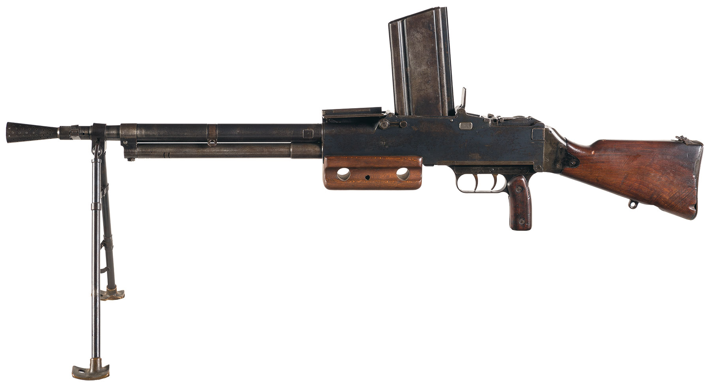Jenis : Senapan mesin ringan
Peluru : 7,5mm French
Perancang : Letkol. Reibel dibantu oleh Chief Armorer Chosse
Fusil -mitrailleur Modèle 1924 M29 (atau MAC 24/29 ), dirancang pada tahun 1924 oleh Manufacture d'armes de Châtellerault , adalah senapan mesin ringan Perancis kaliber 7,5x54mm , yang merupakan senapan mesin standar Angkatan Darat Perancis sejak tahun 1925. hingga tahun 1960an dan digunakan hingga tahun 2000-2006 di National Gendarmerie .
Uni Soviet
Mosin-Nagant
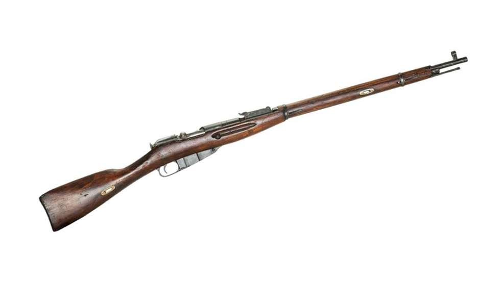Jenis : Senapan aksi-baut
Peluru : 7,62mm Soviet
Perancang : Sergei Mosin, Emile Nagant
Mosin–Nagant adalah senapan militer internal yang diisi magasin internal dengan lima tembakan, aksi baut . Dikenal secara resmi sebagai senapan 3 baris M1891 [9] dan secara informal di Rusia dan bekas Uni Soviet sebagai senapan Mosin ( bahasa Rusia : винтовка Мосина , ISO 9 : vintovka Mosina ), senapan ini terutama ditemukan menggunakan kartrid 7,62×54mmR aslinya .
PPSh-41
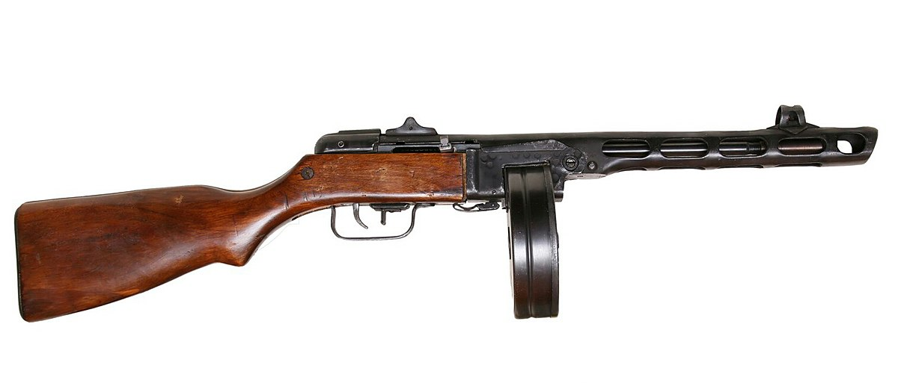Jenis : Pistol mitraliur
Peluru : 7,62mm Tokarev
Perancang : Georgy Shpagin
PPSh-41 (Pistolet-Pulemyot-Shpagina-41; "Pistol mesin Shpagin-41"; Bahasa Russia: Пистолет-пулемёт Шпагина) adalah pistol mitraliur ringan Soviet yang didesain oleh Georgi Shpagin sebagai alternatif yang murah dan sederhana dari PPD-40. Nama sebutan yang paling biasa disebut adalah Pe-Pe-Sha dari 3 huruf awalan PPSh-41 dan juga disebut Papasha (Bahasa Russia: папаша) yang berarti ayah.
DP-27
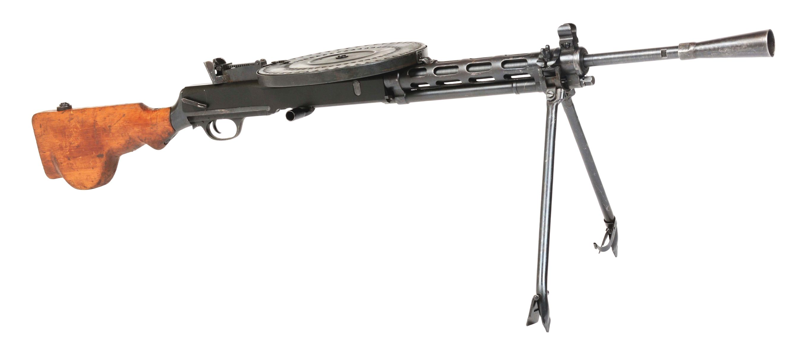Jenis : Senapan mesin ringan
Peluru : 7,62mm Soviet
Perancang : Vasili Degtaryov
Senapan mesin Degtyaryov ( bahasa Rusia : Пулемёт Дегтярёвa Пехотный , diromanisasi : Pulemyot Degtyaryova Pekhotny secara harfiah berarti "senapan mesin infanteri Degtyaryov") atau DP-27/DP-28 adalah senapan mesin ringan yang menembakkan peluru 7,62×54mmR yang terutama digunakan oleh Uni Soviet , dengan uji coba layanan dimulai pada tahun 1927, diikuti dengan penempatan umum pada tahun 1928.
Selain menjadi senapan mesin ringan (LMG) infanteri standar Soviet selama Perang Dunia II , dengan berbagai modifikasi, senjata ini digunakan di pesawat terbang sebagai senjata pertahanan yang fleksibel, dan melengkapi hampir semua tank Soviet pada Perang Dunia II baik sebagai senapan mesin busur fleksibel atau sebagai senapan mesin ringan.
Amerika Serikat
M1 Garand
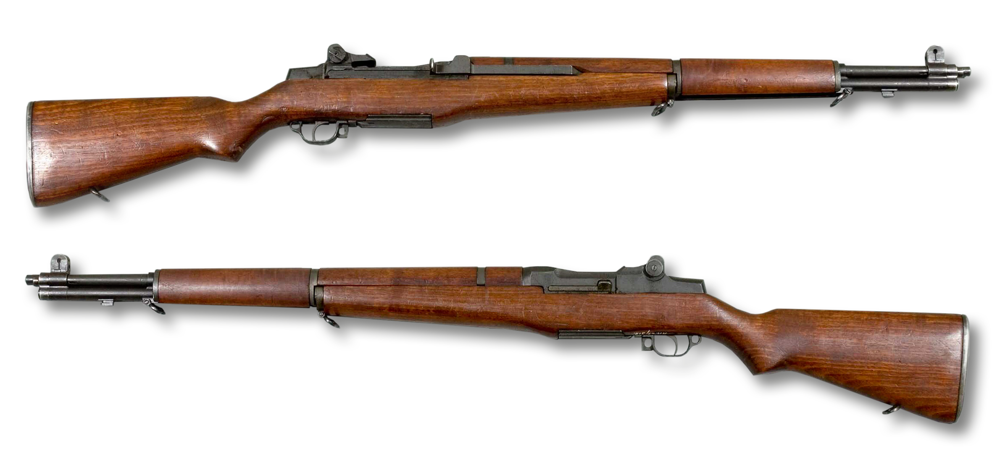Jenis : Senapan Semi Otomatis
Peluru : .30-06 Springfield
Perancang : John Garand
Senapan M1 Garand atau M1 [nb 1] adalah senapan semi-otomatis yang merupakan senapan dinas Angkatan Darat AS selama Perang Dunia II dan Perang Korea .
Senapan ini dilengkapi dengan kartrid .30-06 Springfield dan dinamai sesuai nama desainer Kanada-Amerika , John Garand . Itu adalah senapan autoloading edisi standar pertama untuk Amerika Serikat. [14] Secara umum, senapan M1 berkinerja baik. Jenderal George S. Patton menyebutnya sebagai "alat tempur terhebat yang pernah dirancang". [15] [16] M1 menggantikan bolt-action M1903 Springfield sebagai senapan dinas AS pada tahun 1936, [17] dan digantikan oleh senapan M14 tembakan selektif pada tanggal 26 Maret 1958.
M1 Thompson
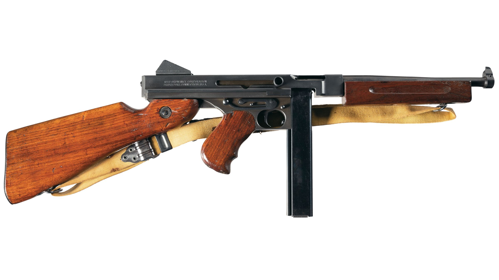Jenis : Pistol mitraliur
Peluru : .45 ACP
Perancang : John T. Thompson
Dirancang oleh Brigadir Jendral John Taliafero Thompson semasa Perang Dunia I yang berfungsi sebagai "Sapu Parit" (atau dalam bahasa Inggris "Trench Broom"). Bekerja sama dengan John Blish, mereka membuat mekanik Thompson dengan nama Blish Locking System yang katanya merupakan mekanik submesin terbaik di antara kelas submesin ketika Perang Dunia I dan Perang Dunia II. Thompson menyondong kaliber .45ACP yang kuat. Panjangnya sekitar 81.9 cm dan kekatan yang dihasilkan sekitar 2479 Joule dari ujung laras. Seiring dengan waktu ketika PD2, Thompson pun diringkas pembuatanya. Dari Blish Locking sistem, menjadi mekanik biasa dan kecepatan pelurunya pun dikurangi dari 800 rpm menjadi 700 rpm. Thompson adalah senjata submesin pertama yang dibuat oleh Amerika Serikat pada tahun 1928.
BAR
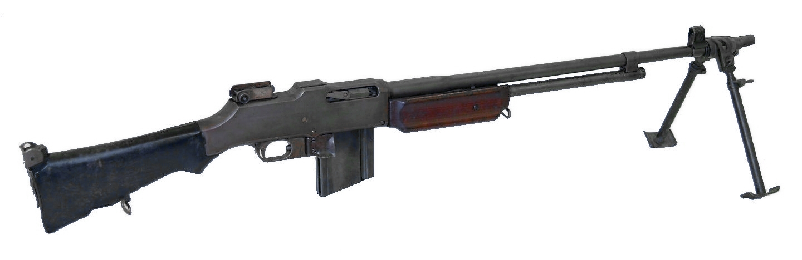Jenis : Senapan mesin ringan
Peluru : .30-06 Springfield
Perancang : John M. Browning
Senapan Otomatis Browning (bahasa Inggris: Browning Automatic Rifle (BAR)) adalah bagian dari keluarga varian senapan mesin/otomatis ringan yang banyak dipakai oleh berbagai negara pada abad 20an buatan Amerika Serikat. Varian utama dari seri senapan ini adalah M1918 yang menggunakan amunisi senapan .30-06 Springfield. Senapan ini didesain oleh John Browning pada 1917 untuk kepentingan tentara Amerika pada perang Eropa yang sebelumnya menggunakan senapan buatan Prancis Chauchat dan senapan mesin M1909 Benet-Mercie. Didesain untuk dapat digunakan dalam mobilitas tinggi dalam posisi berdiri menggunakan sling dan ditembakan dari bagian pinggul pengguna pada saat berjalan, meskipun dalam kenyataannya lebih sering digunakan menggunakan bipod. Senapan ini memiliki varian yaitu Colt Monitor Machine Rifle yang merupakan senapan paling ringan dari senapan yang menggunakan amunisi .30-06 Springfield dengan kapasitas amunisi 20 butir yang pernah dibuat.
Nazi Jerman
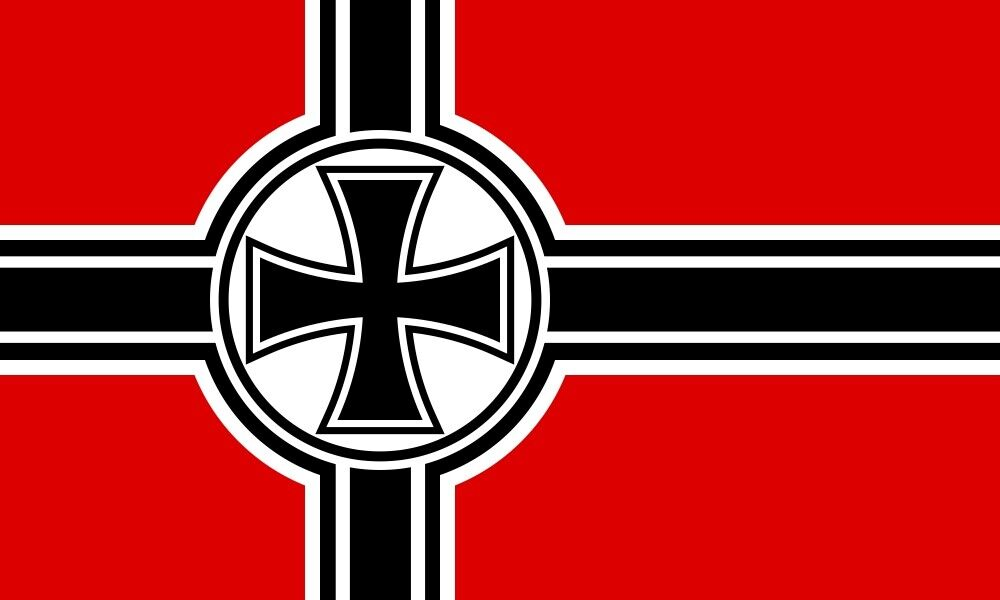Karabiner 98K
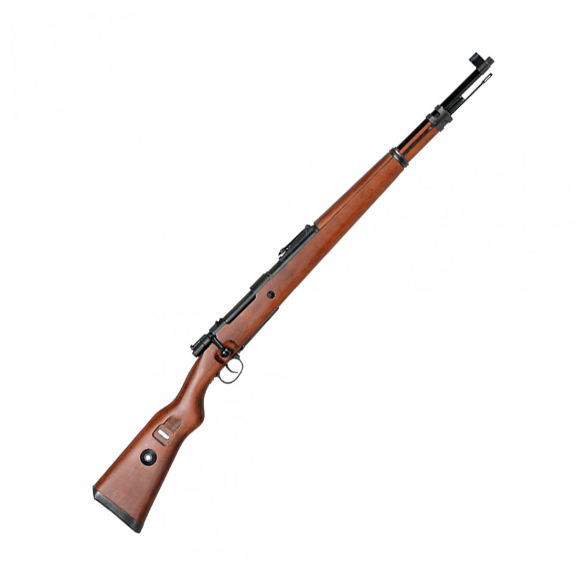Jenis : Senapan aksi-baut
Peluru : 7,92mm Mauser
Perancang : Mauser
Karabiner 98k (biasa disingkat menjadi Kar98k atau K98k) adalah senapan aksi-baut yang digunakan sebagai senapan standar infanteri oleh Wehrmacht Jerman mulai tahun 1935. Senapan ini merupakan hasil pengembangan dari serangkaian senapan yang dibuat oleh Mauser.
MP 40
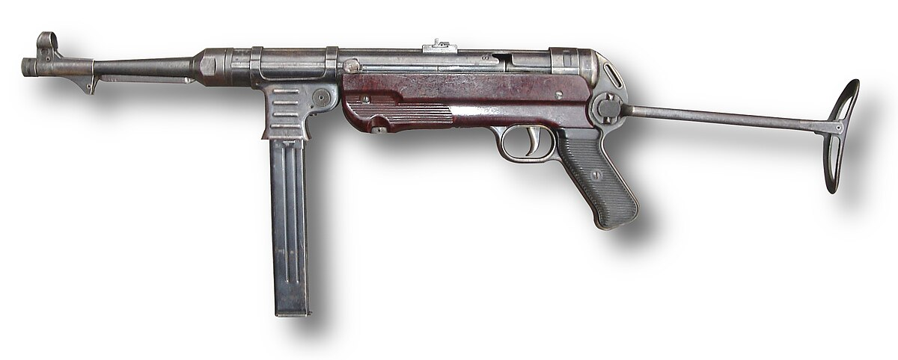Jenis : Pistol mitraliur
Peluru : 9mm Parabellum
Perancang : Heinrich Vollmer
MP 40, singkatan dari Maschinenpistole 40, adalah pistol mitraliur dengan peluru 9×19 mm Parabellum yang dikembangkan dan digunakan oleh Jerman Nazi pada Perang Dunia II. Walaupun dari bentuknya terlihat kurang meyakinkan, MP40 merupakan senjata yang dirancang dengan baik. Terkadang tentara AS menukarkan Thompson atau M3 mereka dengan senapan ini. Karena kecepatan menembaknya lambat, tendangan senapan ini lebih bisa dikontrol, membuatnya lebih akurat.
Dirancang pada tahun 1938 oleh Heinrich Vollmer yang dikembangkan dari pendahulunya MP 38, MP 40 banyak digunakan oleh para infanteri (terutama pemimpin peleton dan regu), dan oleh pasukan terjun payung, di Front Timur dan Barat, serta kru kendaraan tempur lapis baja.[1][2] Fiturnya yang canggih dan modern menjadikannya sangat populer oleh tentara di berbagai negara-negara di belahan dunia pasca perang. MP 40 sering disebut "Schmeisser" oleh Sekutu, dinamai dari Hugo Schmeisser yang mendesain MP 18 (meskipun dia tidak terlibat dalam desain atau produksi MP 40). Dari tahun 1940 hingga 1945, diperkirakan 1,1 juta MP 40 telah diproduksi oleh Erma Werke.
MG 42
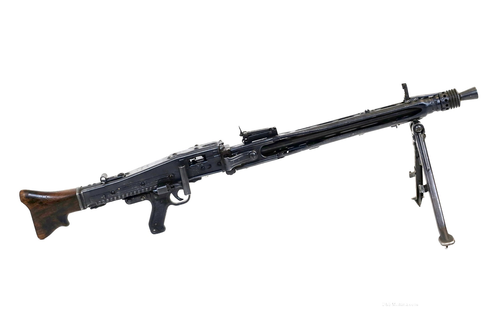Jenis : Senapan mesin ringan
Peluru : 7,92mm Mauser
Perancang : Werner Gruner
MG 42 (disingkat dari bahasa Jerman: Maschinengewehr 42 , atau "senapan mesin 42") adalah senapan mesin serba guna berpendingin udara yang dioperasikan dengan recoil Jerman yang digunakan secara luas oleh Wehrmacht dan Waffen-SS selama paruh kedua Perang Dunia II. . Memasuki produksi pada tahun 1942, senjata ini dimaksudkan untuk melengkapi dan menggantikan MG 34 sebelumnya , yang lebih mahal dan membutuhkan waktu lebih lama untuk diproduksi, namun kedua senjata tersebut diproduksi hingga akhir Perang Dunia II.
Kerajaan Italia
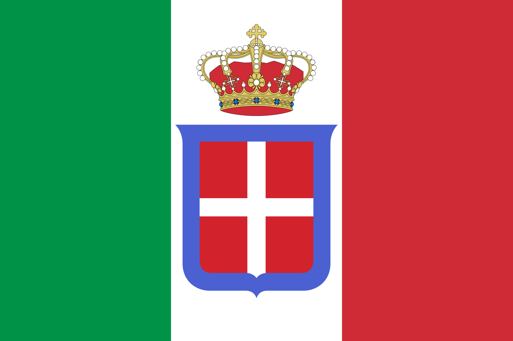Carcano M91/38
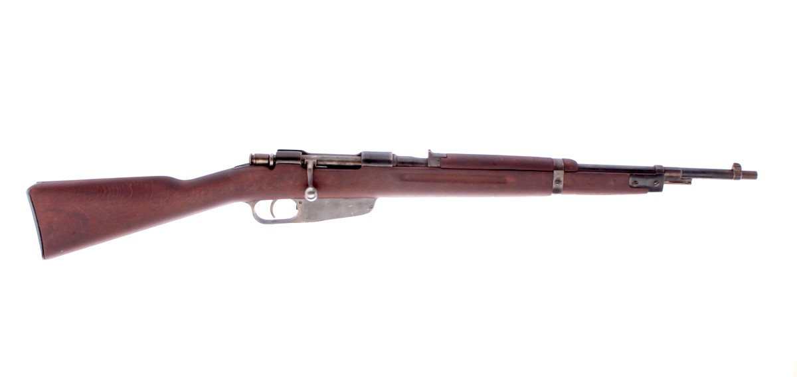Jenis : Senapan aksi-baut
Peluru : 6,5mm Carcano
Perancang : Salvatore Carcano
Carcano adalah nama yang sering digunakan untuk serangkaian aksi baut Italia , pengisian magasin kotak internal , pengulangan senapan militer dan karabin . Diperkenalkan pada tahun 1891, senapan ini dilengkapi dengan peluru Carcano 6,5x52mm tanpa bingkai ( Cartuccia Modello 1895 ). Ini dikembangkan oleh kepala teknisi Salvatore Carcano di Arsenal Angkatan Darat Turin pada tahun 1890, dan pada awalnya disebut Modello (model) 91 atau hanya M91. Secara berturut-turut menggantikan senapan dan karabin Vetterli-Vitali sebelumnya dalam ukuran 10,35×47mmR, senapan ini diproduksi dari tahun 1891 hingga 1945. M91 digunakan dalam bentuk senapan ( fucile ) dan karabin laras pendek ( moschetto ) oleh sebagian besar pasukan Italia selama Perang Dunia I. dan oleh pasukan Italia dan beberapa Jerman selama Perang Dunia II . Senapan ini juga digunakan selama Perang Musim Dingin oleh Finlandia, dan juga oleh pasukan reguler dan tidak teratur di Suriah, Libya, Tunisia, dan Aljazair selama berbagai konflik pascaperang di negara-negara tersebut.
Beretta M38
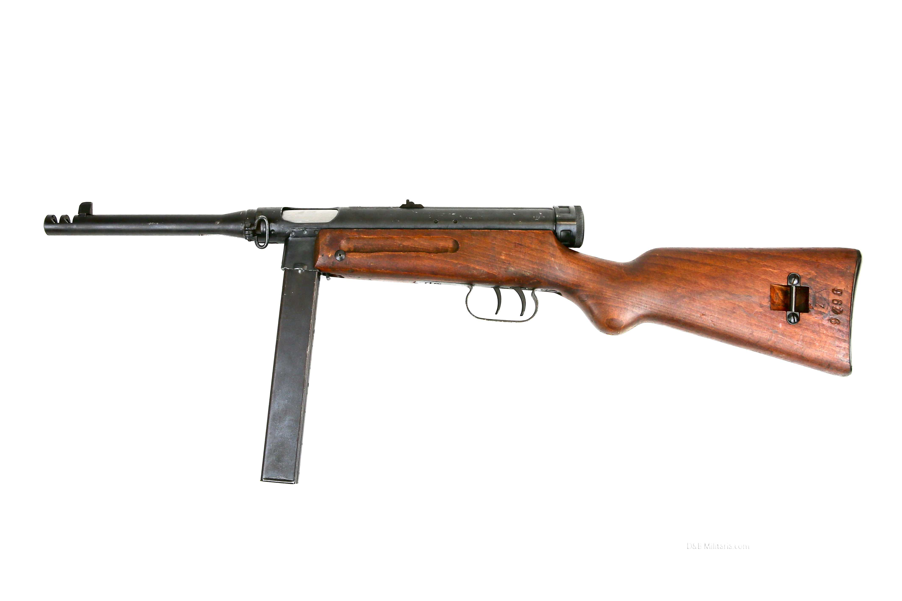Jenis : Pistol mitraliur
Peluru : 9mm M1938
Perancang : Beretta
MAB 38 ( Moschetto Automatico Beretta Modello 1938 ), Modello 38 , atau Model 38 dan variannya adalah serangkaian senapan mesin ringan resmi Angkatan Darat Kerajaan Italia yang diperkenalkan pada tahun 1938 dan digunakan selama Perang Dunia II . Beretta Modello 38 pertama kali dikeluarkan untuk unit polisi Italia yang ditempatkan di Afrika. Tentara Italia terkesan dan memutuskan untuk mengadopsi versi yang akan digunakan oleh pasukan elit dan polisi militer, namun meminta varian modifikasi yang tidak memiliki bayonet dan kompensator mundur yang berbeda. MAB 38 digunakan secara luas dan digunakan di semua lini. [5] Senjata tersebut juga digunakan oleh tentara Jerman, Rumania, dan Argentina pada saat itu.
Breda 30
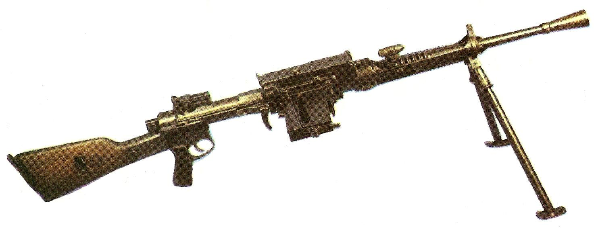Jenis : Senapan mesin ringan
Peluru : 6,5mm Carcano
Perancang : Breda
Fucile Mitragliatore Breda modello 30 adalah senapan mesin ringan standar Angkatan Darat Kerajaan Italia selama Perang Dunia II . [2] Breda Modello 30 dikeluarkan pada tingkat peleton dan memberikan daya tembak ekstra pada regu senapan Italia. Sebagai senapan mesin ringan, senapan ini mempunyai banyak masalah termasuk macet dan panas berlebih. Itu diumpankan oleh 20 klip stripper bundar yang harus diminyaki dengan alat pelumasan. Terlepas dari semua kesalahannya, kapal ini menjadi basis tembakan utama bagi unit infanteri selama perang.
Kekaisaran Jepang
Arisaka Tipe 99
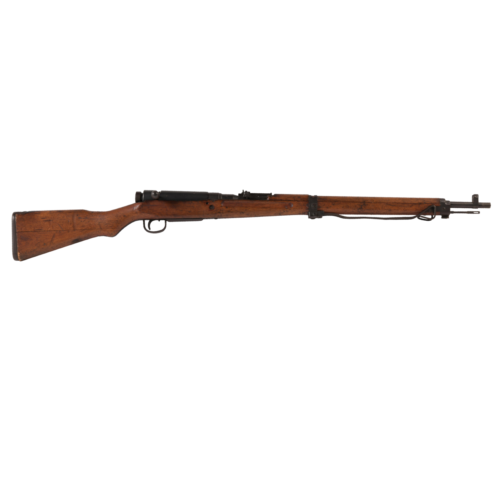Jenis : Senapan aksi-baut
Peluru : 7,7mm Arisaka
Perancang : Kijiro Nambu, Nariakira Arisaka
Senapan Tipe 99 atau senapan pendek Tipe 99 (九九式短小銃, Kyūkyū-shiki tan-shōjū ) adalah senapan jenis Bolt-action rancangan Arisaka yang digunakan oleh Tentara Kekaisaran Jepang selama Perang Dunia II .
Selama Perang Tiongkok-Jepang Kedua pada tahun 1930-an, Jepang segera menemukan bahwa kartrid 7,7 mm yang ditembakkan oleh senapan mesin berat Tipe 92 di Tiongkok lebih unggul daripada kartrid 6,5×50 mm dari senapan Tipe 38 . Hal ini memerlukan pengembangan senjata baru untuk menggantikan Tipe 38 yang kalah kelas, dan akhirnya melakukan standarisasi pada satu selongsong senapan. [3] Tentara Kekaisaran Jepang (IJA) mengembangkan Tipe 99 berdasarkan senapan Tipe 38 tetapi dengan kaliber 7,7 mm.
Tipe 100
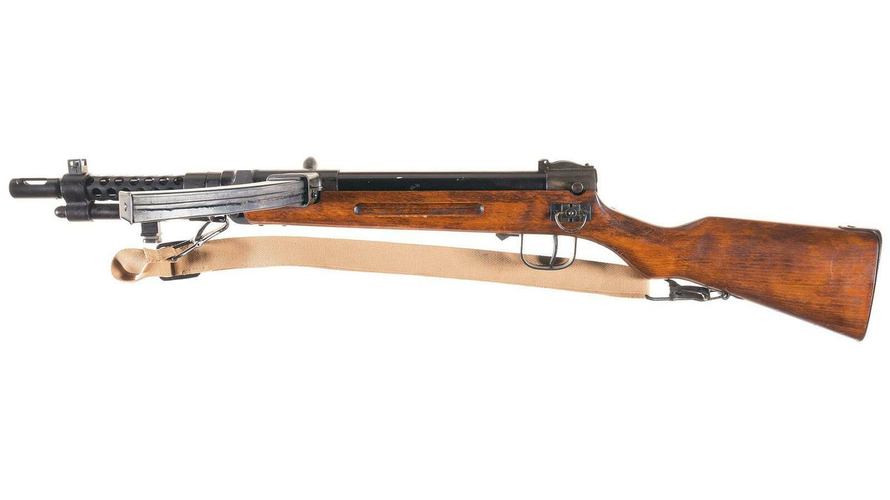Jenis : Pistol mitraliur
Peluru : 8mm Nambu
Perancang : Kijiro Nambu
Senapan mesin ringan Tipe 100 (一〇〇式機関短銃, Hyaku-shiki kikan-tanjū) adalah senapan mesin ringan Jepang yang digunakan selama Perang Dunia II dan satu-satunya senapan mesin ringan yang diproduksi Jepang dalam jumlah berapa pun. Pesawat ini dibuat dalam dua varian dasar yang disebut oleh pengamat Amerika dan Inggris sebagai Tipe 100/40 dan Tipe 100/44, yang terakhir juga dikenal sebagai Tipe 100 (yang disederhanakan). Sejumlah kecil versi sebelumnya diubah menjadi menggunakan popor lipat, kadang-kadang disebut oleh Sekutu sebagai angkatan laut Tipe 100, yang dibuat untuk penerjun payung.
Tipe 11
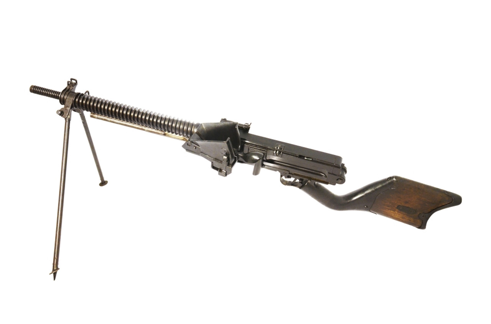Jenis : Senapan mesin ringan
Peluru : 7,7mm Arisaka
Perancang : Kijiro Nambu
Senapan mesin ringan Tipe 11 (十一年式軽機関銃, Jyūichinen-shiki Kei-kikanjū) adalah senapan mesin ringan yang digunakan oleh Tentara Kekaisaran Jepang pada periode antar perang dan selama Perang Dunia II. Diadopsi sebagai senapan mesin ringan pertama Angkatan Darat Kekaisaran Jepang, Tipe 11 dirancang oleh Kijirō Nambu dan memiliki kemiripan tertentu dengan seri senapan mesin Hotchkiss. Ia memiliki sistem pengumpanan yang tidak biasa yang memerlukan lima klip bundar untuk dijatuhkan ke dalam hopper, sistem ini menampung hingga total enam klip (30 putaran) dan setiap putaran diminyaki saat dimasukkan ke dalam ruangan. Meskipun kinerja keseluruhannya bagus, sistem umpan ini rentan mengumpulkan kotoran dan pasir yang akan membuat senjata macet saat digunakan. Senjata ini dikeluarkan untuk pasukan pada tahun 1922 dan digunakan secara ekstensif sebagai senjata pasukan hingga tahun 1945.
.png)